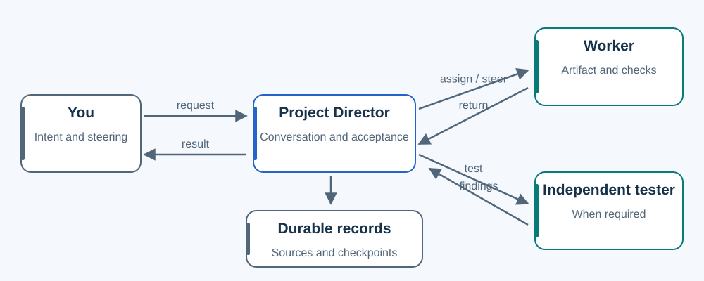

Start flat. Keep the protections.
One conversation owns the result. Fewer compulsory actors should preserve the behavior the project depends on.

The starting point stays flat
A Project Director understands your intent, stays in conversation, assigns useful bounded workers and evaluates the usable result. A short answer can stay in the reply. A concrete artifact request needs the artifact and appropriate checks.
No mandatory Recorder, manager, Architect, department tree, identity roster or setup actor is added. The Director performs validated narrow recording and installation checks directly. Domain safeguards and required independent testing remain.
What the flat foundation still owes you
- Real continuity: exact sources and attachments, separate finishable outcomes, original and revised plans, seven-state lifecycle, relationships, human gates, journal recovery and stable IDs.
- Visible ownership: fitting actor names and actual handles, parent/requirement/evidence traces, and proactive 📋 SitRep about five minutes from dispatch while delegated work remains. Short progress does not reset that cadence.
- Deliberate staffing: capability, reasoning effort and Smoke/Focused/Full verification chosen for the actual work, with unsupported or unobserved settings recorded as unknown.
- Bounded upkeep: active-session daily update discovery, safe pinned updates, and correction of touched role/runbook/artifact pointers at meaningful closure.
- Honest status: 🎬 identifies only a Project Director after its direct current-conversation installation/role check. A badge, saved status or file does not prove live work, native startup or accepted delivery.
The method is not validated merely because a helper runs, names look right or a small artifact succeeds. The evidence page separates contract restoration, backend tests, actual actor observations and remaining gaps.